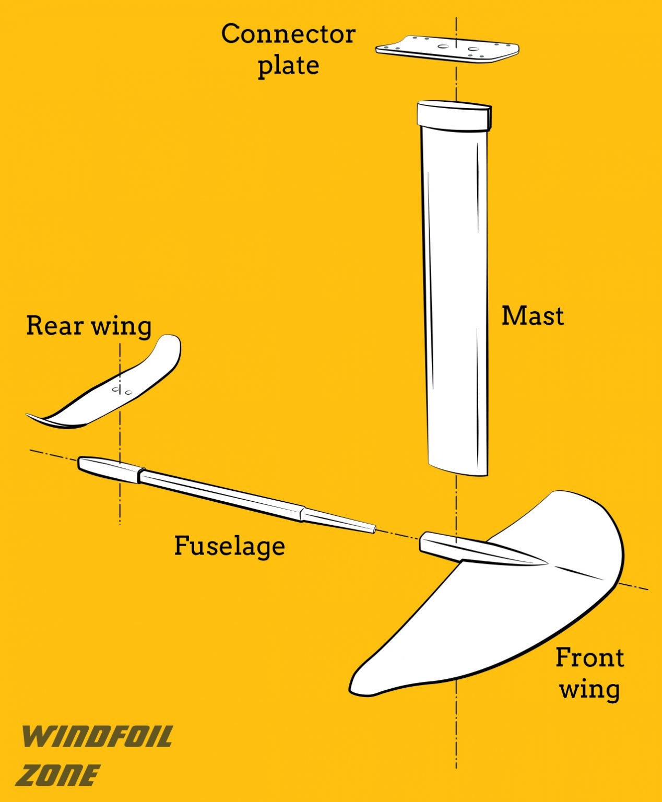

There's a new kid on the block. They call them hydrofoil surfboards.Although hydrofoil technology is nothing new and has been around for over 100 years, attching the technology to a surfboard is definitely new, and certainly exciting. The technology was originally invented to allow boats to reach higher speeds without using up more fuel.In the water sports community they are reffered to as 'Foil boards'. It's essentially a traditional surfboard that instead of sporting fins on its belly, it has a hydrofoil which extends into the water and lifts the entire board and surfer letting them glide above the water surface, rather than on top of it.Here's how it works:

As you can see from the image above, the mast is the part that is attached and extends from the board where the fins are usually positioned. At the end of the mast we have the fuselage, which extends horizontally with the front and rear wings on eithr side.
The rear wing acts as a stabilizer while the front wing does the magic. Due to the front wing's thickness and shape, it casuses water to flow faster over the uppper surface area of the wing, which in turn lowers pressure and generates lift.
Foil Surfing vs Traditional Surfing
The ride
Foil boards provide you with a much longer ride than a traditional board ever could. There is a technique called 'Pumping' (a rhythmic movement) which can be used to propel the foil board forward across basically flat water or back out to catch the next wave.
Safety
Apart from the fact that most people use them in calmer waters, the foil board can be a lot more dangerous as the wings can be sharp and cause serious injury.
Price
The gear needed can be much more expensive compared to regular surfing. A new board, the foil and a helmet if you're new could cost a pretty penny.
Skill level
It's much more difficult to get the hang of. Having prior surfing experience would be much more advantageous.